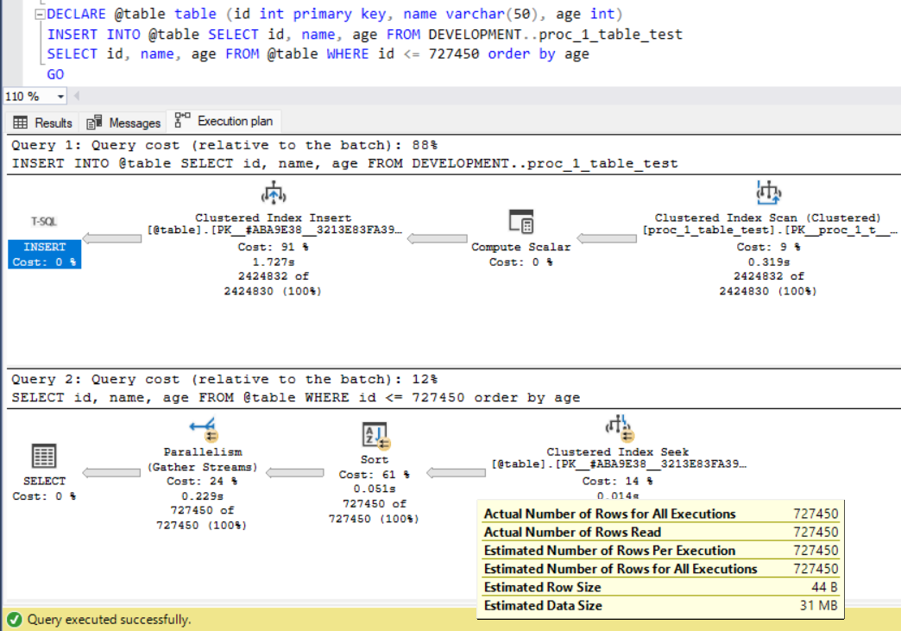
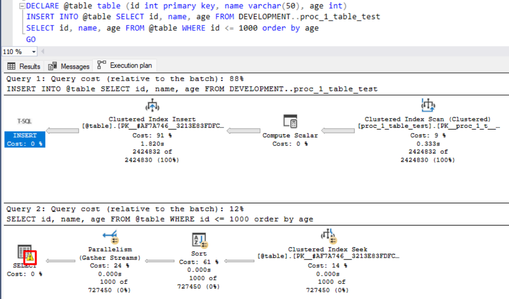
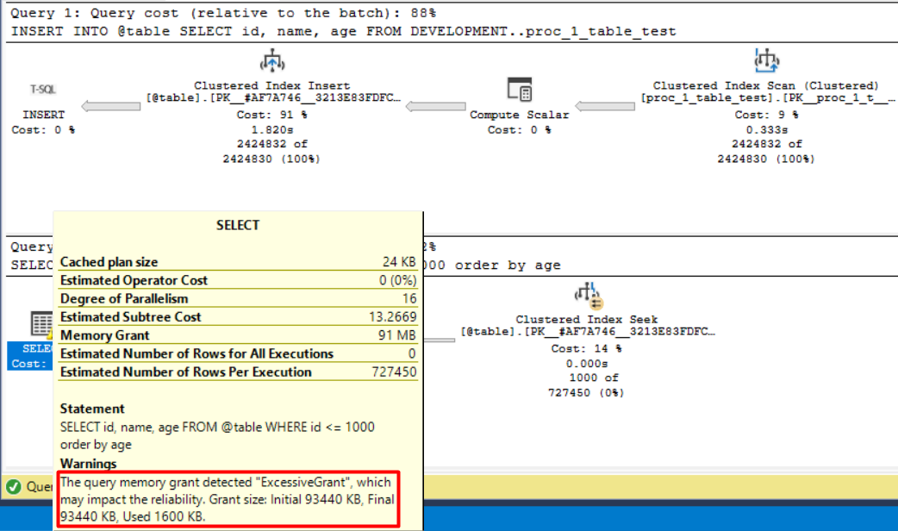
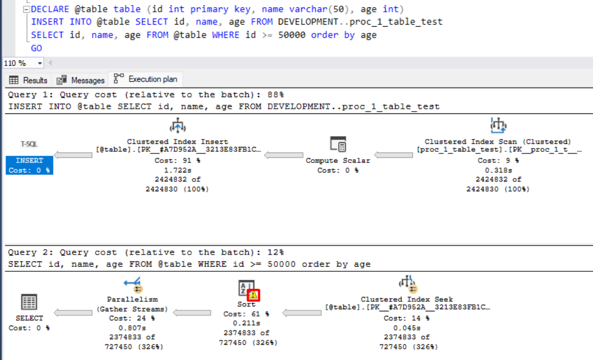
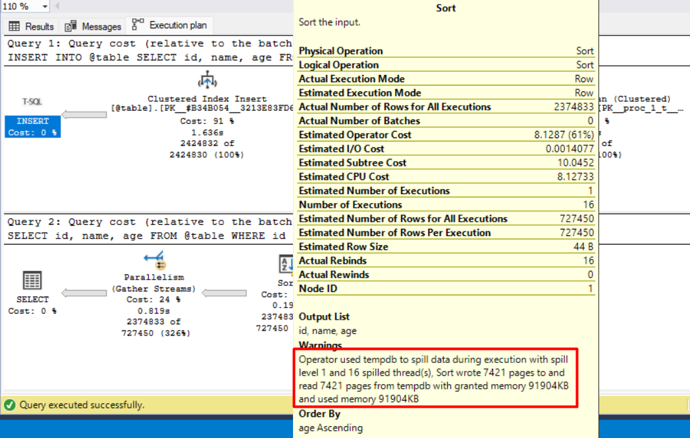
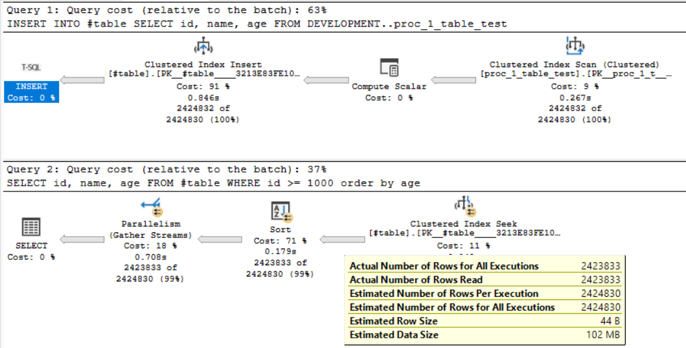

Temp Table x Table Variable
Este artigo servirá de guia prático e teórico em relação à escolha da estrutura de dados temporários no SQL Server. Apesar de muitos desenvolvedores usarem indistintamente Tabelas Temporárias (#table) e Variáveis de Tabela (@table), elas seguem bases e comportamentos completamente diferentes por baixo dos panos.
Sabendo disso, vamos começar pelas Tabelas Temporárias (#table):
Uma tabela temporária é uma estrutura de dados real, criada fisicamente no banco de dados tempdb. Assim como as tabelas comuns, o SQL Server consegue gerenciar e entender o que está acontecendo com os dados ali dentro. Ela existe no disco (ou cache de buffer) e permite manipular volumes massivos de informações.
Seguindo a premissa do mecanismo do banco de dados, temos algumas especificações que dão uma vantagem absurda para as #tables, como as estatísticas e histogramas.
Estatísticas, teórica e resumidamente, informam ao otimizador do SQL Server a quantidade e a distribuição dos dados (os chamados histogramas). O otimizador tem acesso a esses dados, lê tudo e, com isso, consegue montar o melhor plano de execução possível. Além disso, você pode criar índices permanentes nelas e o recurso de paralelização de CPU funciona perfeitamente.
Fato curioso: O comando OPTION (RECOMPILE) funciona perfeitamente aqui, permitindo que o banco reotimize a query baseando-se nos dados reais já conhecidos antes de executá-la.
Mas, nem tudo é perfeito. O uso de temp tables gera um pequeno overhead de I/O por precisar criar a tabela, gerar locks e, depois, dropar a tabela. Além, é claro, de ocupar espaço real no tempdb.
Após o overview relacionado às temp tables, podemos partir para as Variáveis de Tabela (@table):
Como o próprio nome diz, trata-se de uma variável, assim como uma string ou um int. Ela é inicializada, preenchida e descartada automaticamente no final do escopo ou do batch.
Isso pode soar como o cenário ideal:
Sintaxe mais limpa (sem precisar fazer DROP) e menos I/O de metadata gerando log no tempdb. Porém, o paradigma aqui é extremamente perigoso para o banco de dados.
O SQL Server trabalha cegamente com variáveis de tabela. Independentemente de você inserir 10, 1.000 ou 1 milhão de linhas, o otimizador sempre vai estimar que existem exatamente 100 linhas ali dentro (ou apenas 1 em versões mais antigas do SQL Server). Simplesmente não existem histogramas.
Fato curioso: Tentar usar OPTION (RECOMPILE) em uma variável de tabela não vai salvar sua query. Como não existem histogramas para ler, a recompilação vai continuar estimando as mesmas 100 linhas de forma fixa.
O "chute" de 30% do SQL Server:
Existe um comportamento curioso no motor do SQL Server quando lidamos com Variáveis de Tabela. Como a @table não possui estatísticas nem histogramas, o otimizador fica "cego" em relação à distribuição real dos dados que estão lá dentro.
Quando você executa uma consulta usando operadores de desigualdade ou intervalo (como <, <=, >, >=), o mecanismo de Cardinality Estimation (CE) precisa adivinhar quantas linhas vão retornar. Sem ter um histograma para ler, ele aplica uma regra de fallback (um chute padronizado): ele sempre estima que a condição vai retornar exatamente 30% do total de linhas da tabela.
Observe a evidência abaixo. Inserimos 2.424.830 registros na nossa variável de tabela. Ao executarmos um SELECT com o filtro WHERE id <= 727450, o SQL Server não varreu os dados para saber a resposta. Ele simplesmente pegou a cardinalidade total da tabela e multiplicou por 0.3 (30%). O resultado? Uma estimativa cravada de 727.450 linhas.

Repare no "Estimated Number of Rows Per Execution" mostrando exatos 30% do total inserido.
Excessive Grant e o temido Spill:
Quando o banco estima errado (pensando que tem 100 linhas, mas tem 100 mil), ele consequentemente erra na alocação de memória RAM para executar a operação.
O Excessive Grant ocorre quando o SQL aloca memória demais (desperdiçando recursos vitais do servidor e impedindo outras conexões de trabalharem) ou aloca memória de menos, baseando-se naquela estimativa falsa de 100 linhas.
Observe o operador SELECT:

Veja no detalhe a seguir o aviso amarelo (warning) disparado diretamente no operador SELECT. Ele mostra claramente o diagnóstico de "ExcessiveGrant", expondo a discrepância entre a memória que o SQL reservou (Grant size) e o que ele efetivamente utilizou:

E o que acontece se o SQL Server alocar pouca memória RAM para uma operação pesada de ordenação (Sort)? Os dados não vão caber. Como rota de fuga, o banco "derrama" (Spill) essa operação diretamente para o disco rígido, através do tempdb. É aí que a velocidade despenca, pois o disco pode ser de milhares a centenas de milhares de vezes mais lento que a memória RAM.
Observe o operador Sort:

Abaixo, o aviso explícito no operador de Sort confirmando que o SQL foi forçado a fazer um Spill para o tempdb, degradando fortemente a performance da query:

Para finalizar: A prova prática de por que a Temp Table vence
Até agora vimos o pesadelo que uma @table pode causar no plano de execução. Mas e se pegarmos exatamente o mesmo cenário (inserindo milhares de linhas e fazendo uma ordenação) e usarmos uma #table?
CREATE TABLE #MinhaTempTable (id INT PRIMARY KEY, name VARCHAR(50), age INT);
-- Inserindo o mesmo grande volume de dados do cenário problemático
INSERT INTO #MinhaTempTable
SELECT id, name, age FROM DEVELOPMENT..proc_1_table_test;
-- O SQL Server criará estatísticas reais para essa tabela
SELECT id, name, age
FROM #MinhaTempTable
WHERE id <= 1000
ORDER BY age;
DROP TABLE #MinhaTempTable;Ao analisar as propriedades do plano de execução dessa nova query, a mágica acontece. Como o SQL Server gera estatísticas reais e histogramas para a Temp Table logo após a inserção dos dados, o otimizador não precisa mais "adivinhar".
Na imagem abaixo, você pode notar que o Estimated Number of Rows bate perfeitamente com a realidade. Como o banco sabe a quantidade exata de dados que vai processar, ele aloca a memória (Memory Grant) na medida certa e executa o Sort inteiramente na memória RAM, sem qualquer aviso amarelo de Spill ou Excessive Grant:

Essas são as principais diferenças práticas e teóricas entre Temp Tables e Table Variables. A regra de ouro é: se você tem menos de 100 linhas (ou apenas um passador simples de parâmetros), uma @table pode deixar o código limpo. Para qualquer volume além disso, ou se tiver dúvida de quanto sua transação vai crescer em produção, vá de #table. O custo de I/O para criá-la é ínfimo se comparado ao pesadelo arquitetural de um plano de execução corrompido por uma variável gigante.
Obrigado por ler até aqui e bons estudos!